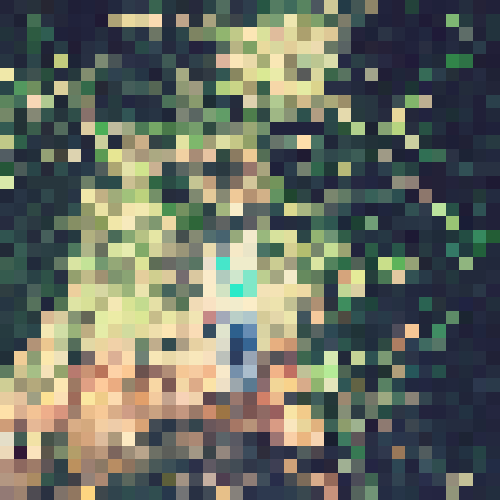

<h1>Contents</h1>
<ul>
  <li><a href="/about">About me</a></li>
</ul>
<h1>Social</h1>
<ul>
  <li><a href="https://note.com/shamisonn">note</a></li>
  <li><a href="https://zenn.dev/shamisonn">Zenn</a></li>
  <li><a href="https://github.com/shamisonn">Github</a></li>
  <li><a href="https://twitter.com/shamisonn">Twitter</a></li>
</ul>
